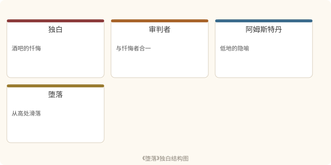

堕落
一、基本信息
| 作者 | 加缪 |
|---|---|
| 成书/出版 | 1956年出版（作者页 B092 口径：堕落（1956）） Albert Camus — Encyclopaedia Britannica（百科全书） |
| 国别/地区 | 法国 |
| 时代 | 现当代 · 20世纪 |
| 体裁 | 中篇小说 |
| 语言 | 法语 |

《堕落》独白结构图（主题·结构图）
二、创作背景
作者页（B092）：加缪 major_works 载'西西弗神话（1942）、反抗者（1951）、堕落（1956）'（B092 作者页定位，详见 juwairen 条核对）。
文体（通说）：独白体——克拉芒斯在阿姆斯特丹酒吧的自白（'审判者—忏悔者'）。
三、内容脉络
克拉芒斯的独白：巴黎名律师的堕落自述（通说待核）。
'审判者—忏悔者'的双重身份（通说待核）。
四、主要人物表
| 人物 | 身份 | 说明 |
|---|---|---|
| 克拉芒斯 | 前律师 | 独白者（通说） |
五、主题与艺术特点
- 审判者的自我审判（通说）。
- 现代人的伪善（通说）。
- 从'反抗'到'堕落'的思想转折（通说待核）。
六、影响与评论
- 作者页：加缪后期代表作（B092 作者页口径）。
Albert Camus — Encyclopaedia Britannica（百科全书） - 与《反抗者》论战的文学余波（通说待核）。
Albert Camus — Encyclopaedia Britannica（百科全书）
七、阅读建议
难点
- 独白体的不可靠叙述。
- 阿姆斯特丹的空间隐喻。
- 《堕落》（上海译文出版社，通说待核）。
- 法文原版（Gallimard）。
先《局外人》《鼠疫》后本作。
八、待核实
- 1956年出版（Gallimard说）核对。
- 克拉芒斯人名核对。
- '审判者—忏悔者'（juge-pénitent）译法待核。